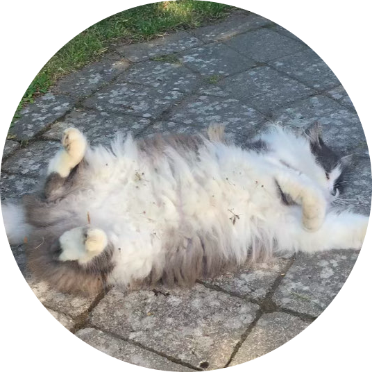

<link rel="preconnect" href="https://fonts.googleapis.com">
<link rel="preconnect" href="https://fonts.gstatic.com" crossorigin>
<link href="https://fonts.googleapis.com/css2?family=Roboto&family=Roboto+Mono:wght@100;400&display=swap" rel="stylesheet">
<title>cats are good</title>
<script>
    function github() {
        document.location.href = "https://github.com/Axelanse/"
    }
    function twitter() {
        document.location.href = "https://twitter.com/SeAxelan/"
    }
    function youtube() {
        document.location.href = "https://www.youtube.com/channel/UCcfzAlhInD7PAB00O7RrIBA"
    }
    function discord() {
        document.location.href = "discord://-/users/860068702732812338"
    }
    function cat() {
        document.location = "mycat/index.html"
    }
</script>
<style>
    u + u {
    margin-left: 10px;
}
</style>
<header style="align-items: center; text-align: center; align-content: center;">
    

<p style="font-family: 'Roboto', sans-serif;
font-family: 'Roboto Mono', monospace; font-size: 200%; margin-top: 0%; color: white;">axell</p>
</header>
<header style="        font-family: 'Roboto', sans-serif;
font-family: 'Roboto Mono', monospace; font-size: 200%; margin-top: 0%; color: white; text-align: center; margin-right: 0%;">
    <a style="color: inherit; text-decoration: underline;" href="https://github.com/Axelanse/">github</a>
    <a style="color: inherit; text-decoration: underline;" href="https://twitter.com/SeAxelan/">twitter</a>
    <a style="color: inherit; text-decoration: underline;" href="https://www.youtube.com/channel/UCcfzAlhInD7PAB00O7RrIBA">youtube</a>
    <a style="color: inherit; text-decoration: underline;" href="discord://-/users/860068702732812338">discord</a>
</header>
<body style="background-color:rgb(40, 40, 40)">
    
</body>

